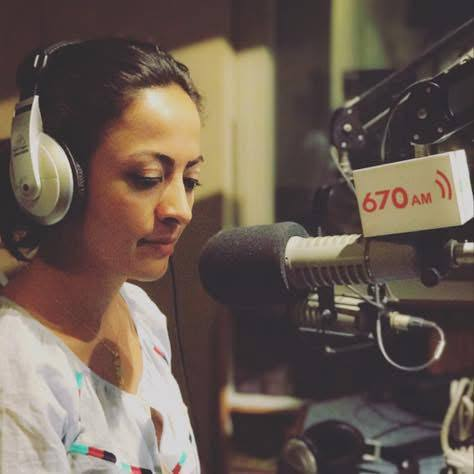
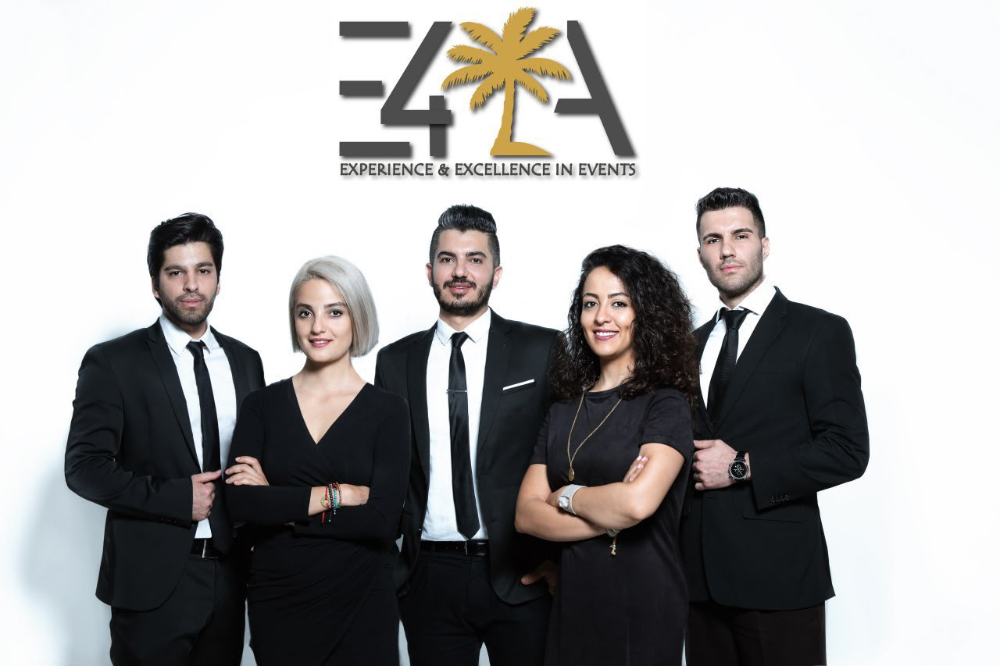
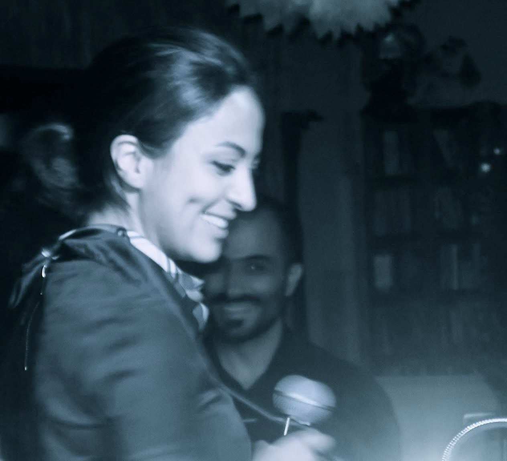
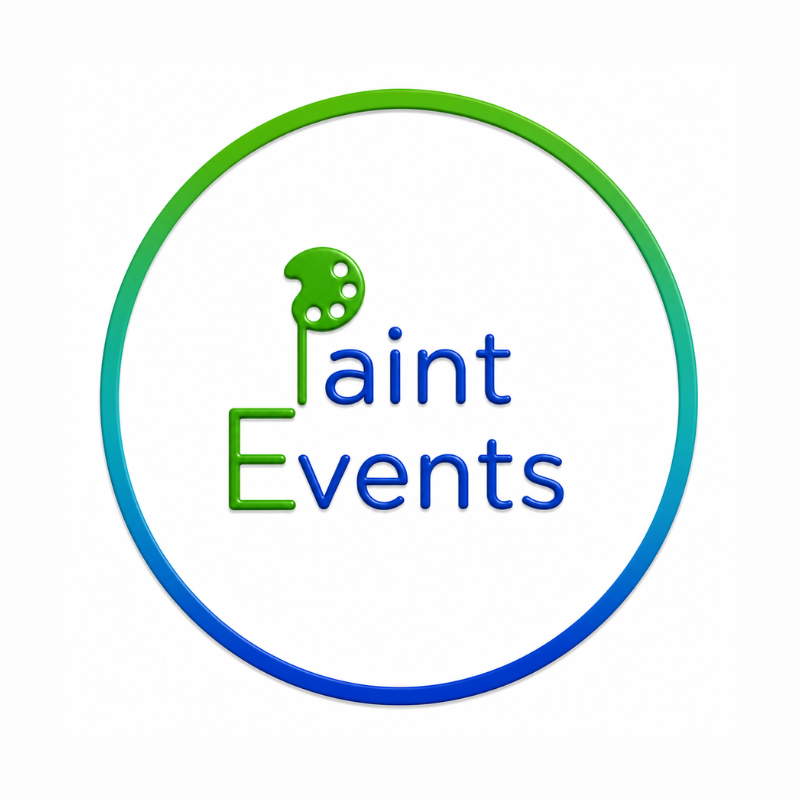
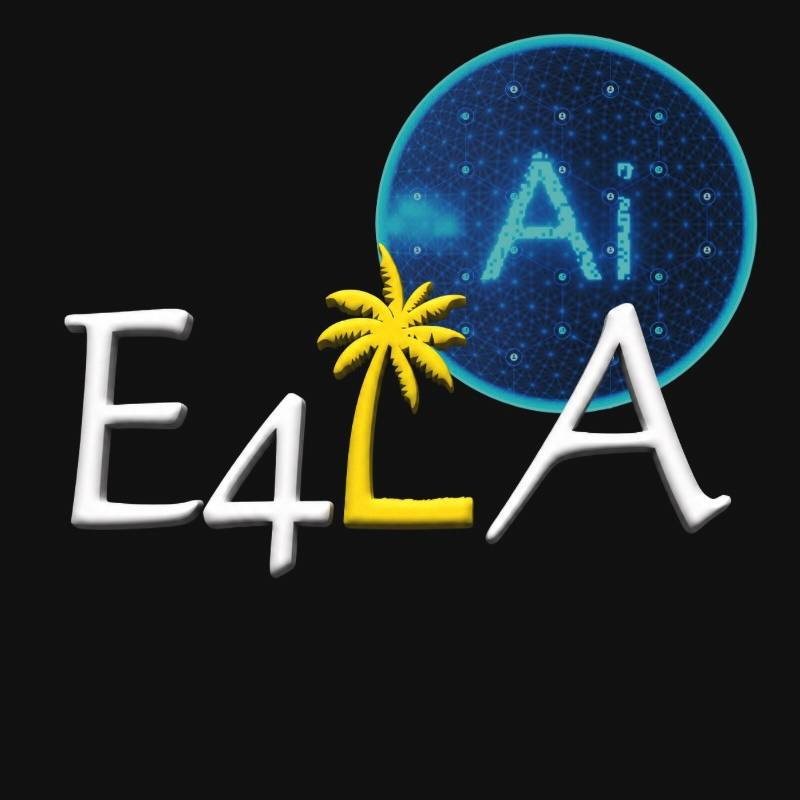
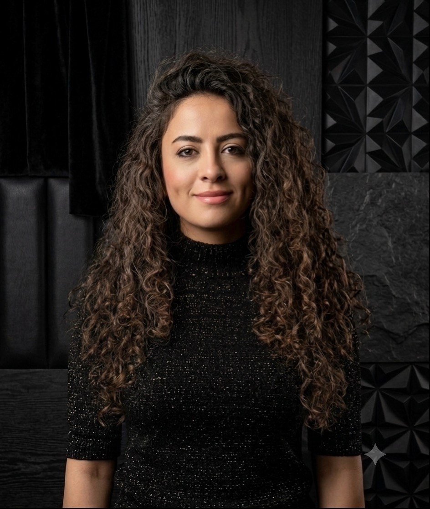
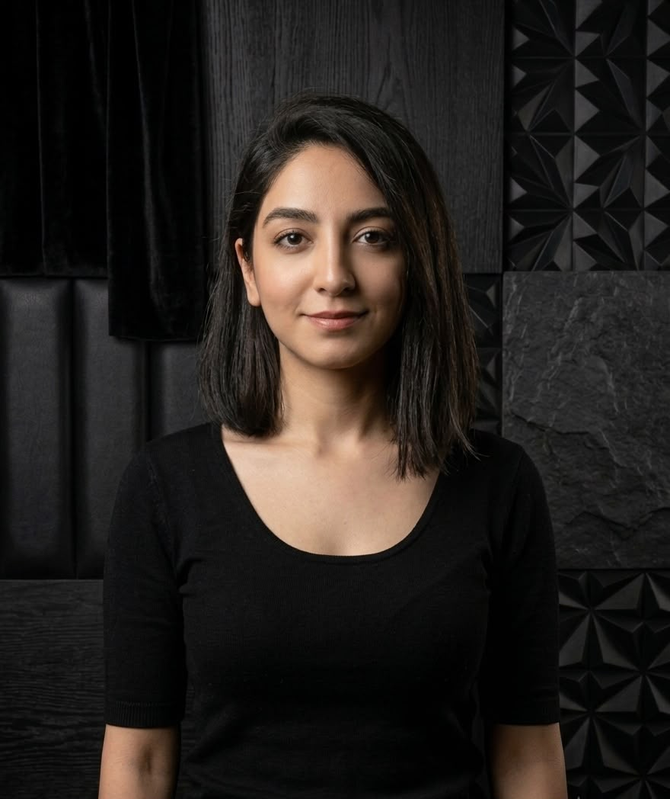

Our Mission
To help businesses, entrepreneurs, artists, and organizations understand their value, communicate it clearly, improve quality, and evolve through human creativity supported by intelligent technology.
About Us
Founded with purpose. Built on experience.
Driven by innovation. Powered by people.
E4LA (Evolve for Los Angeles) is a multidisciplinary creative strategy, digital experience, and AI-powered business consultancy helping businesses, entrepreneurs, artists, and organizations clarify their direction, communicate their value, improve customer experiences, and build smarter systems for sustainable growth.
From strategy to execution, we combine human insight, creative thinking, business experience, UX/UI, SEO and GEO, brand direction, and AI-powered workflows to develop solutions that are effective, measurable, scalable, and built for continuous improvement.
To help businesses, entrepreneurs, artists, and organizations understand their value, communicate it clearly, improve quality, and evolve through human creativity supported by intelligent technology.
To build a multidisciplinary consultancy where creativity, strategy, customer experience, design, and AI work together to shape stronger businesses and more meaningful experiences.
Excellence. Craftsmanship. Continuous learning. Ethical business. Practical innovation. Human-centered design. Authenticity. Trust. Long-term impact.
More than 23 years of experience across consulting, quality management, customer experience, entrepreneurship, media, design, creative production, digital strategy, and AI, brought together through one integrated operating model.
Our Journey
2016
Nasim began building her professional network in Los Angeles through live event experiences, media, radio, television hosting, and community-focused creative work.

2018
E4LA was founded as a platform for creativity, cultural programming, strategy, media, and experiential projects.

2018-2021
E4LA produced and supported music, cultural, and community experiences, including programs involving established Iranian artists and local alternative rock and jazz musicians, while Nasim continued extensive live radio and television hosting.

2021
Nasim completed certification in Therapeutic Art Coaching and Life Coaching, expanding E4LA's human-centered approach to creativity, expression, connection, and personal growth.

2022
Paint Events began operating as an E4LA experiential service, creating mobile and community-based art experiences, corporate workshops, team-building programs, private events, festivals, and themed creative activities. More than 3,000 participants have painted through Paint Events experiences.

2023-Now
After becoming formally certified in UX/UI design, Nasim expanded E4LA into digital experience strategy, websites, customer journeys, branding, SEO, GEO, content systems, and AI-supported business solutions.

2026
E4LA is evolving into an AI-supported multidisciplinary consultancy with structured workflows, specialized agents, human approval systems, and scalable delivery across strategy, digital experience, visibility, brand, and innovation.
The Team

Founder & Multidisciplinary Creative Strategist
Nasim Askar is the founder of E4LA and a multidisciplinary entrepreneur, creative strategist, UX/UI and experience designer, AI workflow consultant, business advisor, artist, and creative producer.
Her professional experience spans more than 23 years across technology sales, international consulting, ISO 9002-based customer experience and quality management, team leadership, HR, finance, media, event production, branding, digital strategy, UX/UI, content, and AI-supported business systems.
She has hired and trained more than 40 team members, advised investors and skilled professionals, contributed to the expansion of service businesses, hosted extensive live radio and television programming, developed creative and cultural experiences, and led Paint Events programs involving more than 3,000 participants.
Her role within E4LA is to connect business strategy, human experience, creativity, technology, and AI into clear systems that help clients understand their value, improve quality, communicate effectively, and grow sustainably.

AI Workflow & Project Coordinator
Rojin supports E4LA across project coordination, digital production, AI workflows, prompt development, research, process organization, and implementation support.
Her current work includes assisting with competitor research, UI and website projects, GitHub and Cloudflare workflows, AI-assisted production, project tracking, and the development of repeatable systems that help E4LA deliver work more efficiently.
She works under Nasim's strategic and creative direction and contributes to turning approved plans into structured, trackable project execution.